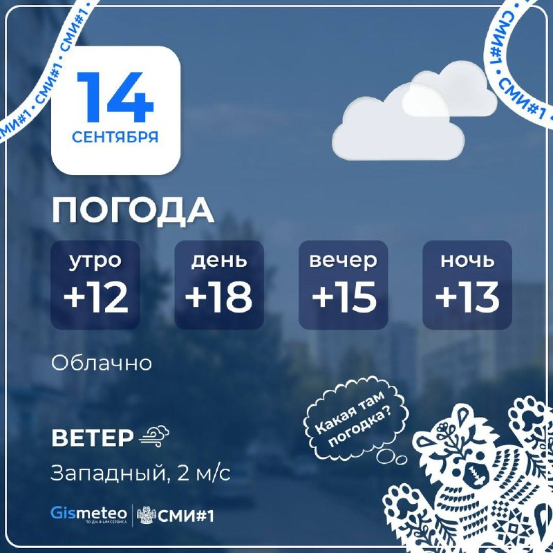
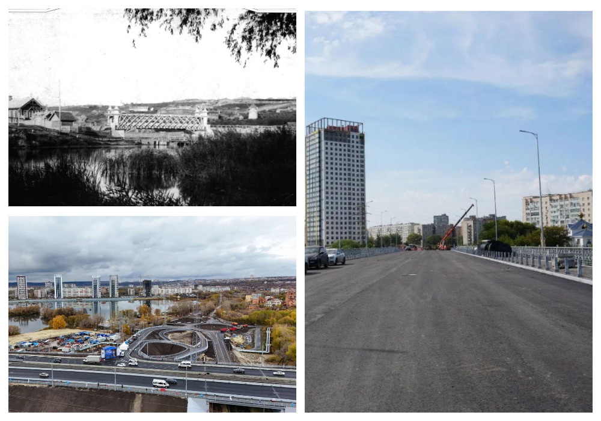

Образование и наука
Сегодня отмечается день образования нашего родного и любимого города Симбирска-Ульяновска.
Сегодня отмечается день образования нашего родного и любимого города Симбирска-Ульяновска. С праздником, ульяновцы!…

Самое читаемое
- Бесплатному питанию для школьников
- Друзья, сегодня провел совещание с главами администраций муниципальных образований
- 🤝 Ежегодно поощряем молодых жителей нашего региона, которые вносят вклад в развитие родной
- ⚡️ Ракетная опасность объявлена в Ульяновской области ⚠️ Внимание
- 🤔 Российские детские сады оснастят «правильными игрушками» на основе традиционных ценносте
Сейчас
08:12
😬 Последствия празднования Дня Города в центре Ульяновска 😱
t.me/tresh_ulyan
08:08
08:00
07:45
☁️ Прогноз погоды на сегодня Желаем хорошего рабочего дня! 📲
t.me/ulyanovsk_smi
07:08
Сегодня в области
Справка
Погода: сейчас 13° (ощущается 11°), днём до 17°. Тон повестки и метрики инфополя —
в проекте «Инфопространство». Периоды: неделя, месяц.
Последние материалы
Весь выпуск № 1 →
До конца текущего года осталось 17 рабочих недель, при этом две из них будут короткими
До конца текущего года осталось 17 рабочих недель, при этом две из них будут короткими.…

☁️ Прогноз погоды на сегодня Желаем хорошего рабочего дня! 📲

Чтобы не случилось «руководящего умопомрачения». Ульяновским мостам через Свиягу предлагают дать…
Интересную инициативу в кругу коллег выдвинул ульяновским краевед Вячеслав Ильин - предложил дать официальные названия мостам через Свиягу.…
Поэтому канал «Удаленочка » предлагает вакансии для работы из дома: — свободный график
Поэтому канал «Удаленочка » предлагает вакансии для работы из дома: — свободный график — оплата 2-3 раза в месяц — официальное трудоустройство или подработка ( выбираете Вы ) Спешите на Удаленочку, там всем платят хорошие деньги за простую работу из дома.…
19-летняя девушка вскрывала посылки, забирала товары себе, а пустые упаковки запечатывала обратно
19-летняя девушка вскрывала посылки, забирала товары себе, а пустые упаковки запечатывала обратно.…
С 1 сентября на неё отводится 50% курса «Основы безопасности и защиты Родины»
С 1 сентября на неё отводится 50% курса «Основы безопасности и защиты Родины» — всего 68 часов за четыре учебных года, сообщил глава Минпросвещения.…
Препарат будет полностью защищать от заражения
Препарат будет полностью защищать от заражения.…
Сюжет недели · Аналитика
Бесплатному питанию для школьников.
Возник 09.09, пик 09.09 — сюжет держал 1 источник. Полная дуга — в недельнике.
Мнения повестки
Инфопространство →Цитаты анонимных каналов приводятся как материал исследования повестки, а не как редакционные оценки.